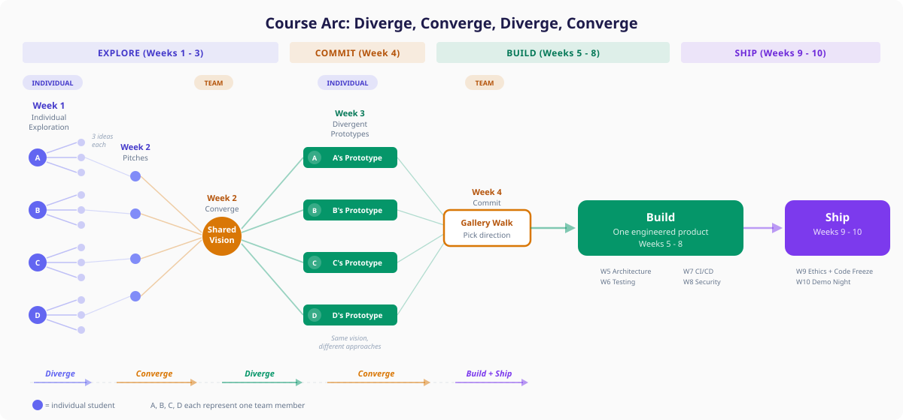

Course Overview
Welcome to CSEN 174! The central goal of this course is to equip you with the tools, processes, and practices that support the development of high-quality software, especially those you will be expected to use in real-life software engineering jobs. This course gives you a first look at what it is like to take a software product through the whole development process, from conception to deployment, as a member of a software engineering team.
Software engineering is also changing fast. AI tools can now generate code, review pull requests, scaffold entire applications, and explain unfamiliar codebases. This course teaches you to build with these tools while learning the engineering practices that still matter: architecture, testing, deployment, security, ethics, and team collaboration.
Structurally, this course revolves around a cumulative small-group project. You will work in teams on a quarter-long project, starting with rapid AI-assisted prototyping and shifting your focus over the quarter to robustness, testing, and maintainability. Lectures introduce concepts and weekly assignments that guide the development of this project, while labs provide guaranteed group work time and regular check-ins with teaching assistants. In general, there will be one graded assignment per week, assigned in lecture on Tuesday and due at the end of the day on the following Monday.
Instructor
Kai Lukoff · klukoff@scu.edu
Office hours: Tuesdays 9:15–10:15 AM and 1:30–2:30 PM, Heafey 229
Teaching Assistants
| Kiki Zhang · xzhang22@scu.edu | Tuesday lab, 2:15–5:00 PM, Heafey 106 |
| Lawrence Liu · sliu12@scu.edu | Wednesday lab, 2:15–5:00 PM, Heafey 106 |
Meeting Times
| Lectures | Tuesday & Thursday, 10:20 AM – 12:00 PM, Lucas Hall 206 |
| Tuesday Lab | Tuesday, 2:15–5:00 PM, Heafey 106 |
| Wednesday Lab | Wednesday, 2:15–5:00 PM, Heafey 106 |
| Final Presentations | Thursday, June 4 |
| Final Project Due | Wednesday, June 10 |
Learning Outcomes
- Compare and contrast phases of different software development processes and choose the best fit for a given scenario
- Develop and present software artifacts produced through a methodical development process
- Compare and contrast different software architectures and choose the best fit for a given scenario
- Compare and contrast different approaches to software project management and choose the best fit for a given scenario
- Apply the IEEE/CS code of ethics for software engineers, including considerations specific to AI-assisted development
Grading (220 points total)
| Component | Points | Details |
|---|---|---|
| Group project deliverables | 100 | Weekly group and individual artifacts scored on a 1–10 scale |
| Final presentation | 40 | Group demo (10–15 min per team) |
| Pop quizzes | 20 | 7 quizzes on readings, best 5 of 7 count. 10 MC questions, ~10 min. |
| Perusall annotations | 20 | 2+ substantive annotations per reading assignment |
| AI learning journal | 20 | Weekly: 3 interesting prompts (with a sentence on why each), plus one opportunity and one challenge |
| Lab + lecture participation | 20 | Participation in standups, demos, and presentations |
Policies
AI Tool Use
AI tools are encouraged and expected in this course. See the full AI Policy tab for details.
Attendance and Participation
This course places a strong emphasis on group projects and participation in in-class activities. It mostly follows a flipped classroom model: lectures will be brief, but there will be a lot of hands-on activity during lecture time. Attending in person is expected for both lecture and lab. In-person participation contributes to your participation grade and may also affect the evaluation of your contributions to the group project.
Lecture attendance
If you are missing 2+ lectures in a row, send an email to the course staff and CC your teammates in advance of the lecture. Lecture includes activities that you will do as a team. If you are missing a single lecture, there is no need to send a notification. If you do not send this email, it will be marked as an unexcused absence.
Lab attendance
If you are missing lab, send an email to the course staff and CC your teammates in advance of the lab. If you do not send this email, it will be marked as an unexcused absence.
Pop quizzes
There are 7 in-class, paper-based pop quizzes throughout the quarter. Only your best 5 of 7 scores count. This means you can miss up to 2 quizzes for any reason (illness, travel, a bad day) without it affecting your grade and without needing to provide an excuse or notify anyone.
Recordings
There may be situations where attending in person is not possible (e.g., illness, family emergency). All lecture slides and recordings will be made available for review. However, these are intended to supplement learning and are not a substitute for attending in-person activities.
Late Assignments
Assignments that are late without prior notice will not be accepted. If you need to submit your assignment late due to special circumstances, please email the instructor at least 24 hours before the deadline to discuss the possibility of an extension. This is a fast-paced course and it is imperative that you stay on track in order to participate in class and lab activities that depend upon your having completed your assignment on time.
Academic Integrity
Using AI to help you build is expected. Submitting work you do not understand, or misrepresenting another student’s work as your own, is not. See the AI Policy tab for the full details on ownership, understanding, and what happens if something goes wrong.
SCU Policies and Resources
Academic Integrity
The Academic Integrity pledge is an expression of the University’s commitment to fostering an understanding of—and commitment to—a culture of integrity at Santa Clara University. The Academic Integrity pledge, which applies to all students, states:
I am committed to being a person of integrity. I pledge, as a member of the Santa Clara University community, to abide by and uphold the standards of academic integrity contained in the Student Conduct Code.
Academic integrity is part of your intellectual, ethical, and professional development. I expect you to uphold the principles of this pledge for all work in this class. I will clarify expectations on academic integrity—including the use of AI tools such as ChatGPT and course sharing sites—for all assignments and exams in this course. If you have questions about what is appropriate on any assignment, please let me know before you hand in work. For more resources about ensuring academic integrity in your work, see this site created by the SCU Library at https://libguides.scu.edu/academic-integrity or visit www.scu.edu/academic-integrity.
Discrimination, Harassment and Sexual Misconduct (Title IX)
Santa Clara University is committed to providing all students with a safe learning environment free of all forms of discrimination, sexual harassment, and sexual violence.
Please know that as a faculty member, California law SB 493 requires me to report any information brought to my attention about incidents of sexual harassment or misconduct to the SCU Equal Opportunity and Title IX Office (408) 551-3043. This includes, but is not limited to, disclosures in writing assignments, class discussions, and one-on-one conversations.
Should you need support, SCU has dedicated staff trained to assist you in navigating campus resources, accessing health and counseling services, providing academic and housing accommodations, helping with legal protective orders, and filing a formal complaint with the University or with law enforcement. Please see the Student Resources page for more information about reporting options and resources.
If you or someone you know has experienced sexual harassment or sexual violence and wishes to speak to a confidential resource who is not required to report, please contact one of the following SCU resources for support:
- SCU Wellness Center
- CAPS
- Any individual (clergy, counselors) acting in a professional capacity for which confidentiality is mandated by law
I am happy to help connect you with any of these resources.
Accommodations for Pregnant and Parenting Students
Santa Clara University does not discriminate against any student on the basis of pregnancy or related medical conditions. Absences due to medical conditions relating to pregnancy and childbirth will be excused for as long as deemed medically necessary by a student’s doctor, and students will be given the opportunity to make up missed work. Students needing accommodations can often arrange accommodations by working directly with their instructors, supervisors, or departments. Students needing accommodations can also seek assistance with accommodations from the Office of Accessible Education (OAE) or from the Office of Equal Opportunity and Title IX Office. The following link provides information for students and faculty regarding pregnancy rights: https://www.scu.edu/title-ix/resources/pregnancy/.
Office of Accessible Education
If you have a documented disability for which accommodations may be required in this class, please contact the Office of Accessible Education (OAE) as soon as possible to discuss your needs and register for accommodations with the University. If you have already arranged accommodations through OAE, please be sure to request your accommodations through the OAE portal and discuss them with me during my office hours within the first two weeks of class. To ensure fairness and consistency, individual faculty members are required to receive verification from the Office of Accessible Education before providing accommodations. OAE will work with students and faculty to arrange proctored exams for students whose accommodations include double time for exams and/or assistive technology.
Students who are approved for extended time or other exam accommodations should talk with me as soon as possible. The Office of Accessible Education must be contacted in advance (at least two weeks’ notice recommended) to schedule proctored examinations or to arrange other accommodations. Students should continue to reach out to OAE (oae@scu.edu) regarding access barriers related to this course or content.
Academic Freedom
The University is dedicated to an uncompromising standard of academic excellence and a commitment to academic freedom, freedom of inquiry, and freedom of expression in the search for truth. We are here to engage a set of ideas and research findings that often have long and complicated histories. Scholars may disagree on the topics we will be discussing. Assignment of and references to sources (readings, films, websites, etc.) are not an endorsement of the opinions or content contained in those materials. Students are expected and required to become familiar with the literature relevant to the topic of this course regardless of whether the professor, the University, or the students find this content agreeable. You are invited to introduce additional challenges in a serious and open-minded manner.
Safety Measures
In order to meet our learning objectives, we will adhere to the highest standards for safety and mutual respect. University policy allows faculty to require the use of face coverings in their classrooms. I may request that students wear face coverings occasionally or throughout the academic term. Failure to comply with my request is a violation of the Student Conduct Code, which I will need to report.
Use of Classroom Recordings
Depending on the learning objectives and pedagogical approaches used in a lesson, some classes may be recorded and made available on Camino. However, as is stated in the Student Conduct Code: “...Dissemination or sharing of any classroom recording without the permission of the instructor would be considered ‘misuse’ and, therefore, prohibited. Violations of these policies may result in disciplinary action by the University. At the instructor’s discretion, violations may also have an adverse effect on the student’s grade.”
Copyright Statement
Materials in this course are protected by United States copyright laws. I am the copyright holder of the materials I create, including notes, handouts, slides, and videos. You may make copies of course materials for your own use and you may share the materials with other students enrolled in this course. You may not publicly distribute the course materials without my written permission.
Technology Support
SCU can provide you with technical assistance, and you can also reach out to our providers directly for questions. For support with Camino (SCU’s branded instance of Canvas), contact caminosupport@scu.edu or call 408-551-3572. You can also find support resources via the help button within the Camino platform (on the left-hand navigation) to access after-hours support via email, chat, or phone.
For Zoom assistance, contact Media Services at mediaservices@scu.edu or 408-554-4520. You can also get support from the SCU website or the Zoom Help Center website.
For SCU network and computing support, contact the SCU Technology Help Desk at techdesk@scu.edu or 408-554-5700. They can provide support for MySCU Portal, Eduroam, Duo, hardware and software issues, and more.
Land Acknowledgment
Santa Clara University occupies the unceded ancestral homeland of the Ohlone and Muwekma Ohlone people.
Note from Kai: Recognizing this history, as well as the contemporary culture of the Ohlone people, has become a key part of my own research. Together with members of the Muwekma Ohlone Tribe and scholars at our university in anthropology, art, and English, I’m working on an augmented reality tour that tells the story of our historical campus from the perspective of the Ohlone people.
Respect for All
It is my intent that students from all backgrounds and perspectives be well served by this course, that students’ learning needs be addressed both in and out of class, and that the diversity that students of all backgrounds bring to this class be viewed as a resource, strength, and benefit. It is my intent to present materials and activities that are respectful of all identities and perspectives. Your suggestions are encouraged and appreciated. Please let me know ways to improve the effectiveness of the course for you personally or for other students or student groups. In addition, if any of our class meetings conflict with your religious events, please let me know so that we can make arrangements for you.
Gender Inclusive Language
This course affirms people of all gender expressions and gender identities. If you go by a name different from what is on the class roster, please let me know. Using correct gender pronouns is important to me, so I encourage you to share your pronouns with me and correct me if I make a mistake. If you have any questions or concerns, please do not hesitate to contact me. For more on personal pronouns see www.mypronouns.org.
The self-introduction slide assignment for this course will help me and other students learn your preferred name and pronouns—and get to know you better!
Wellness Statement and Mental Health Resources
I know you will do the best you can in this class (and all of your classes); however, it should never be at the expense of your own mental and physical health and your overall well-being. Jesuit education is grounded in cura personalis, concern for the whole person—mind, body, and spirit. What does this mean for you? Be kind to others, and more importantly, be kind to yourself. Attend to your sleep (quantity and quality); drink lots of water; move; get outside; and pay attention to beauty that isn’t coming to you on a screen. Eat good food, laugh, enjoy friends and family, look for opportunities to connect with others in new ways, pray, meditate, or otherwise attend to your spirit. And ask for help, even if you don’t think you need it. Lots of folks, including me, are here to support you. It’s never too late to reach out, and I am committed to helping you.
SCU has many resources and programs to support you. These resources may be especially helpful:
Wellness Center: https://www.scu.edu/wellness/
The Wellness center provides resources to aid and promote student well-being across the eight dimensions of wellness, including student peer groups for healthful living, violence prevention, and recovery.
CAPS: https://www.scu.edu/cowell/counseling-and-psychological-services-caps/
Santa Clara students are provided confidential counseling sessions at no cost through Counseling and Psychological Services (CAPS). Students have access to clinically appropriate, short-term therapy; group therapy; and other resources for care. A new 24/7 support line is also available: 408-554-5220.
SCU Culture of Care: https://www.scu.edu/osl/culture-of-care/
If you are concerned for the mental or physical welfare of one of your peers, the Office of Student Life Culture of Care website provides resources for recognizing and helping someone in distress.
Academic Concerns
If you are concerned with your progress in this class, please contact me so that we can find solutions together. Drahmann Center can also offer support with issues regarding your academic progress more broadly.
SCU also has multiple options for free academic tutoring. Students can make appointments to discuss work in a range of courses:
- Drahmann Tutoring (Numerous courses in the College of Arts & Sciences including Natural Sciences, Modern Languages, Economics, and Computer Science)
- The HUB Writing Center (Writing and Public Speaking)
- Mathematics Learning Center (MATH 4, 6, 8, 11-14, 30-31, 35-36, 51, 53)
Grief Resources and Support
An important part of healing from loss is the support of others. The SCU community is committed to supporting you during this difficult time. If you need to miss class or foresee being late on upcoming deliverables due to bereavement, please let me know immediately so we can make appropriate arrangements. If you need additional support, you can contact the Dean of Students Office at (408) 554-4583 or email dso@scu.edu. Staff in DSO can notify other faculty and/or campus supervisors on your behalf and connect you with helpful campus resources.
Quarter at a Glance
Weeks 1–3
Explore APIs, form teams, build one prototype per member
Week 4
Pick the best prototype, plan the real build
Weeks 5–8
Architecture, testing, CI/CD, security
Weeks 9–10
Polish, code freeze, present
In-class Sessions
- W1D1 (Tue Mar 31): Slides Student introductions. Course overview and syllabus walkthrough. Introduce the Week 1 assignment: exploring AI/ML APIs and the projects built with them (Anthropic, OpenAI, Hugging Face, Gemini, etc.).
- W1D2 (Thu Apr 2): Slides Perusall introduction and demo. AI API credit policy. The jagged frontier (from Mollick). AI learning journal introduction. API show-and-tell in small groups, then open work time on the Week 1 assignment and Perusall readings.
Lab
Tool setup (Cursor Pro, GitHub Student Developer Pack, Perusall) followed by hands-on work on the Week 1 assignment. A core part of a software engineer’s job is exploring and understanding new technologies, evaluating what they can and can’t do, and figuring out what’s now possible that wasn’t before. The lab drives both parts of this week’s assignment together: API exploration first, then product ideation that grows out of it. The order matters: your ideas should emerge from what you just saw the APIs can do.
- Hands-on API exploration (60–90 min): Each student explores at least two AI/ML APIs (e.g., Anthropic, OpenAI, Hugging Face, Google Gemini, Replicate, ElevenLabs). Run a simple demo yourself or study and document an existing example. Try different inputs. See what the API can and cannot do.
- Product ideation (60–90 min): From your API exploration, develop 3 product ideas. Each should be grounded in a domain you know something about (a hobby, a job you’ve had, a community you belong to, a problem you’ve personally experienced) and shaped by an AI capability you explored.
- End-of-lab demo: Each student walks through one of the AI APIs they explored, ideally with a working demo or video showing how it might be used.
Deliverable
- API Exploration + Product Ideas slide deck (individual, 10 points) — Explore 2+ AI APIs, propose 3 product ideas, and mock up your best concept with Nano Banana.
In-class Sessions
- W2D1 (Tue Apr 7): Slides Course arc and readings discussion (Booch, Mollick). Centaur vs. cyborg patterns for working with AI. Live demo: building with an AI agent harness. Think-pair-share on what could be improved and where else you’d use a harness. Team formation overview and Week 2 assignment walkthrough.
- W2D2 (Thu Apr 9): Slides Contribution statements overview. Grady Booch and the three golden ages of software engineering. Divergent and convergent prototyping (Dow et al.). Storyboarding introduction. Live demo: installing and using agent skills with the Problem Framing Canvas. Hard deadline: all teams must be finalized by end of this session.
Lab
- Pitch session (~20 min): Each student pitches their best product idea (~1 min each) using the shared class slide deck.
- Team formation: Teams of 3–4 self-form around the ideas that excite people. You do not need to use your own idea. Joining someone else’s is great. All teams log their formation before leaving lab.
- Guided activity: Codebase exploration exercise (Excalidraw repo in Cursor). How to ask the right questions of an AI tool when navigating unfamiliar code.
- Team work: Teams begin working on skills setup and product vision for their chosen product concept.
Deliverable
- Product Vision, Agent Skills, and Problem Framing (team, 10 points) — Three foundational skills installed in the team repo (Problem Framing Canvas, Storyboard, Frontend Design). Product vision using the modified Moore’s template plus a half-page vision narrative. Use the Problem Framing Canvas skill to stress-test your product concept.
Async Activities (replace lecture + lab)
- Repo setup (early in the week): Configure the team repo with branching strategy, project scaffold (front end + back end + database structure), and AI agent configuration files (
.cursorrulesorCLAUDE.mdwith project context). - Git exercise with checkpoints: Fork a repo, create a branch, make changes, open a PR, review a classmate’s PR using GitHub Copilot. Submit links to your PR and review.
- Build divergent prototypes (bulk of the week): Each team member builds their own working prototype of the team’s product concept. All prototypes share the same product vision and personas, but each must explore a genuinely different direction: different interfaces, interaction patterns, or implementation approaches. Not cosmetic variations. See the prototype technical requirements.
- Team async standup: Each member posts to a shared doc: what approach they’re taking, progress so far, one blocker.
Deliverables
- Git exercise (individual) — Links to your PR and code review
- Repo setup + divergent prototypes (team) — Configured team repo and one working prototype per team member, committed to the repo, ready to demo at the Week 4 gallery walk.
In-class Sessions
- W4D1 (Tue Apr 21): Gallery walk. Teams bring laptops with prototypes running locally. Students rotate through stations, trying each prototype and leaving sticky-note feedback (“I liked…”, “I wondered…”, “I’d try…”). Teams reset the app between rotations.
- W4D2 (Thu Apr 23): Intro to Agile and Kanban. Teams commit to one direction based on gallery walk feedback and begin planning the final project.
Lab
- Prototype evaluation: Teams formally evaluate their prototypes against scope guidance and technical feasibility. Look for patterns in the sticky-note feedback.
- Kanban setup + sprint planning: Set up GitHub Projects Kanban board. Populate initial backlog based on chosen direction. From here on, the constraints shift: architecture, testing, and maintainability matter.
Deliverable
- Retrospective + transition plan (team) — What each prototype explored, what worked, what the gallery walk feedback revealed, which direction the team will pursue, and a Kanban board set up for the final project phase.
Weeks 5–10: Outline
Full details for these weeks will be posted to the schedule at least one week in advance.
Deliverable: Component diagram, 2–3 Architecture Decision Records, API cost estimate, "unplugged vs. AI" architecture comparison.
Deliverable: Test suite + coverage report. Unit tests on core logic (especially AI prompt construction and response parsing). TDD exercise documented.
Deliverable: GitHub Actions pipeline (lint, test, build on every PR). Deployed app at a live URL. Deployment runbook.
Deliverable: Security audit (Cursor + manual review) for API key exposure, input validation, prompt injection, dependency issues. Cross-team code review with written feedback.
Individual: Ethics reflection (1–2 pages applying IEEE/CS code of ethics to your project). Group: Code freeze by end of lab. All PRs merged, CI green, deployed and working.
Group: Live demo (10–15 min per team). Final project submission due June 10.
The Quarter-Long Project
This course is built around a single team project. But unlike a traditional project course, you will start by optimizing for speed and exploration, then shift your focus to robustness, testing, and maintainability.
Weeks 1–3
Ideate, form teams, set up your repo, and build divergent prototypes. Each team member builds their own version of the team’s concept with a genuinely different interface or approach.
Week 4
Demo prototypes at the gallery walk. Get peer feedback. Pick a direction and set up your Kanban board for the real build.
Weeks 5–8
New constraints: architecture, testing, CI/CD, security. Weekly deliverables follow SE topics.
Weeks 9–10
Code freeze, ethics reflection, final presentations.
Why prototype first?
AI tools make it possible to build a working interactive prototype in hours, not weeks. That changes the game: instead of spending weeks writing requirements documents for an idea you have never tested, you can build the thing and try it. The Explore phase takes advantage of this.
In Week 3, each team member builds their own prototype of the team’s product concept. All prototypes share the same product vision and personas, but each one should explore a genuinely different direction: different interfaces, interaction patterns, or implementation approaches. “Different” means meaningfully different, not cosmetic variations. One person might build a conversational interface while another builds a dashboard; one might prioritize a mobile-first layout while another explores a desktop power-user workflow.
In W4D1, teams demo all prototypes at a gallery walk where classmates try each one and leave feedback. Teams then evaluate what worked, what the feedback revealed, and commit to one direction (or combine the best elements). Your early prototypes are experiments, not commitments. They let you answer the question “Does this idea actually work?” before the constraints shift from speed and discovery to robustness, maintainability, and scale.

Team Formation
Teams of 3–4 students, self-selected around shared ideas. Teams of 5 are allowed by instructor permission only.
How it works
- Week 1 (individual): Every student explores AI/ML APIs hands-on, then develops 3 product ideas informed by what they saw the APIs can do. Creates a concept mockup of their best idea.
- Week 2, Lab: Each student pitches their best idea (~1 min) using a shared class slide deck. Teams of 3–4 self-form around the ideas that excite people. You do not need to use your own idea. Joining someone else’s is great. All teams log their formation before leaving lab.
- W2D2 (Thu): Hard deadline. All teams must be finalized by end of this session.
- Safety net: Students who haven’t found a team by the end of Week 2 lab will be matched by Kai.
Technical Requirements
The project has two milestones with different technical expectations. The prototype phase is for exploration: build fast, try ideas, don’t worry about production quality. The final deliverable is where engineering rigor kicks in.
Prototype (Week 4 Gallery Walk)
Each team member builds their own divergent prototype. The bar is “works on your laptop when someone walks up to it.”
- Front end, back end, database, and at least one AI API integration. The front end is typically a web interface, but if your product concept calls for a different client (e.g., a browser extension), that’s acceptable as long as the back end components are present.
- Code in the team’s GitHub repository with commits showing individual work. Formal branching strategy and PR workflow are not required.
- A working database connection. SQLite, local Postgres, or equivalent is fine. Production-grade persistence is not expected.
- Intro screen that communicates what the app is, who it’s for, what problem it solves, and how to use it, so someone approaching your laptop with zero context can immediately understand and try it.
- Team resets the app between demo rotations so each visitor gets a clean experience.
Not required for the prototype: test suite, CI/CD pipeline, deployment to a live URL, branch protection, PR-based code review, or setup instructions for other developers.
Final Deliverable (Week 10 Presentation)
Teams consolidate into one engineered product. Full technical expectations apply:
- AI API integration central to the product, not bolted on. The AI must process user input and return a meaningful, non-trivial result. Options include OpenAI, Anthropic, Google, Hugging Face, or similar.
- Programmatic prompt construction. Build prompts with system instructions, context injection, or structured output parsing. Not just raw user input passed to an API.
- Frontend + backend. Your project must include a server-side component with meaningful backend logic. The primary user interface can be a web app, browser extension, or other client, but there must be a backend, not just a frontend calling an AI API directly. A full-stack framework (Next.js, etc.) counts. Pure static HTML calling an API from the browser does not.
- Production-appropriate data persistence. A properly configured database that persists user data across sessions and survives redeployment.
- Version control on GitHub with branch protection, pull requests, and code review.
- GitHub Projects Kanban board for backlog and sprint management, with retrospective cards for each sprint.
- Deployed to a live URL (Vercel, Render, or similar free tier).
- Test suite covering core business logic, especially the AI interaction layer.
- CI/CD pipeline via GitHub Actions (lint, test, build on every PR).
Scope Guidance
Because AI tools dramatically accelerate coding, the expected scope for a team project is higher than in a traditional course. A polished MVP with one core flow that works well is the target.
Insufficient scope (too simple)
Appropriate scope (aim here)
Excessive scope (too ambitious)
Not in scope for this course
The following project types don’t fit the course because they require fundamentally different development toolchains, can’t be experienced by classmates at the gallery walk and demo night, or fall outside the software engineering fundamentals we cover:
- Native mobile apps (iOS/Android). The development, testing, and deployment toolchain is fundamentally different from web-based projects (App Store provisioning, platform-specific CI/CD, device-specific debugging). Classmates can’t try your app at the gallery walk or demo night without installing it on their own phone.
- Desktop-only applications with no web-accessible component. Peers can’t interact with your work at the gallery walk or demo night without installing software on their machine, and the deployment and CI/CD patterns don’t transfer to what we cover in the course.
- Training custom ML models from scratch. Using AI APIs and building RAG pipelines over existing data is in scope and encouraged. Training your own model is a different discipline with different infrastructure requirements, and it would consume your entire quarter at the expense of the software engineering fundamentals this course is designed to teach.
If your product idea doesn’t naturally fit a standard web app format (e.g., a browser extension, a chatbot, a CLI tool), that’s fine. Build the interface that makes sense for your product, and make sure the project includes a server-side component with a database and an API. If you’re unsure whether your approach qualifies, check with the instructor.
AI Learning Journal
Each week, write a short entry that includes:
- 3 interesting prompts from your work that week, with a sentence on why you chose each one (what worked, what surprised you, or what you learned from it).
- One opportunity: Something AI tools helped you accomplish this week.
- One challenge or risk: A moment where AI tools fell short, produced something wrong, or introduced a risk you had to manage.
Completion-graded. The goal is honest reflection, not detailed analysis.
Final Presentation
Group demo (10–15 min per team)
- 2–3 min: Problem, personas, product vision
- 5–7 min: Live demo at the deployed URL
- 2–3 min: Architecture overview, key technical decisions, how AI was integrated
- 2–3 min: Q&A from class
Rubric (40 points)
| Category | Points |
|---|---|
| Demonstration of methodical SE process | 12 |
| Reflection on the process | 8 |
| Presentation quality | 4 |
| Quality of Q&A responses | 4 |
| Usability | 4 |
| Technical depth | 4 |
| Cohesion | 4 |
Reading Assignments
Each week has 3–5 required readings or videos assigned on Perusall for social annotation before class. Target pre-class time: 1–1.5 hours (reading + annotation). You must make 3+ substantive annotations per assignment. "I agree" does not count.
Week 1: Intro to AI-Assisted Software Engineering
~55 min reading + annotation time · Due Apr 5, 10pm on Perusall
Week 2: Storyboards, Agent Skills, and the Arc of Software Engineering
~100 min reading/listening + annotation time
Assignments
All assignments are submitted on Camino. Click any assignment below for the full description and rubric.
Explore 2+ AI APIs, propose 3 product ideas grounded in domains you know, and mock up your best concept with Nano Banana.
Align on a shared product vision, install three AI agent skills in your team repo, and use the Problem Framing Canvas to stress-test your product concept.
Reflect as a team on how work is being shared. Week 4 is a brief check-in. Weeks 7 and 10 include agreed-upon contribution percentages and specific activities.
AI Policy
AI use is encouraged
Generative AI tools are not just allowed in this course; they are a core part of it. The use of AI coding assistants is now commonplace and expected in the software industry, and learning how to work effectively with them is one of the central goals of this class.
You will use tools like Cursor Pro, GitHub Copilot, and other AI assistants throughout the quarter. Many assignments are designed with AI assistance in mind, and you will likely struggle to complete them well without it. This reflects the reality of modern software engineering practice: the question is no longer whether to use AI, but how to use it effectively.
AI as a learning tool
AI is not just a code generator in this course. It is also a learning partner. You are encouraged to use AI tools to help you understand unfamiliar code, concepts, and systems. Ask it to explain what a function does, walk you through an architecture, or clarify why a test is failing. When you encounter an unfamiliar codebase (as you will in the repo exploration assignment), use AI to question it, map its structure, and build your mental model.
This kind of back-and-forth dialogue with AI is a skill worth developing. Engineers who can interrogate code effectively, whether by reading it, running it, or asking an AI about it, learn faster and onboard to new projects more quickly. AI can be a useful thinking partner, but it also makes confident mistakes, hallucinates APIs that don’t exist, and can lead you down the wrong path. Learning to verify what it tells you is part of the skill.
Ownership and understanding
Using AI does not shift responsibility away from you. But what “understanding your code” means changes as your project matures.
During prototyping (roughly the first few weeks), the goal is to explore ideas quickly. You might generate rough code to test whether an interaction works, throw away entire approaches, or use AI to scaffold something you don’t fully understand yet. That’s fine. Prototyping is about learning what to build, not writing production-quality code.
As you move into building and shipping, the standard rises. Code that makes it into your final product should be code you can explain, debug, and defend. You are responsible for the correctness, quality, and security of what you deliver. In software engineering, code you don’t understand is a liability, not an asset. (This is what Addy Osmani calls “comprehension debt,” and it’s one of the key ideas in this course.)
Transparency and reflection
You may be asked to discuss how you used AI tools, what worked well or poorly, and what you learned from using them. Your weekly AI learning journal is where you process these reflections. These discussions are about learning and growth, not compliance or policing.
There is no penalty for heavy AI use. There is no reward for avoiding AI.
What happens if something goes wrong
If AI-generated code introduces a bug, a security vulnerability, or a test failure, you are responsible for finding and fixing it, just as you would be if a teammate wrote the code. “The AI wrote it” is not a defense, in this course or in industry.
If you submit work you don’t understand and this becomes apparent (in a quiz, a presentation, or a lab standup), the consequence is a lower grade on that component. The course is designed so that understanding is assessed frequently and in low-stakes ways (quizzes, journal entries, lab standups), so you’ll get early signals if you’re drifting into territory you don’t understand.
The spirit of this policy
Software engineering is changing fast. The tools you use in this course may be different from the tools you use in your first job. What won’t change is the need to understand what you’re building, why you’re building it, and how to verify that it works. AI makes you faster. Understanding makes you effective. This course asks you to develop both.
Tools & Setup
All required tools are free via student plans. Complete setup by end of Week 1.
Required
Cursor Pro
AI-powered code editor. Primary tool for the course. Free for 1 year with student verification. Go to cursor.com/students, sign up with your @scu.edu email. If verification takes more than 48 hours, email Kai. Select models manually for assignments requiring a specific model; use Auto mode for general work.
GitHub + Student Developer Pack
Version control, project management (Kanban boards via GitHub Projects), CI/CD (GitHub Actions), and code review. Free with GitHub Student Developer Pack, which also includes GitHub Copilot.
Perusall
Social annotation platform for pre-class readings. Read, annotate, and discuss with classmates directly on assigned materials. Auto-scores engagement. Link provided on Canvas.
Figma
UI design and wireframing. Free for 2 years with Figma Education plan. Used for lo-fi wireframes in Week 2.
Recommended (free)
Vercel / Render
Deployment platforms with generous free tiers. You will deploy your project to a live URL starting in Week 7. Vercel works well for Next.js; Render is more general-purpose.
Additional AI Tools
You are welcome to use any additional AI tools: Claude, ChatGPT, Google Gemini, v0, etc. Document which tools you used in your AI learning journal.
AI API Credits
The department is covering up to $25 per student in API credits for your final project. Any AI API provider is eligible: Anthropic, OpenAI, Google, Hugging Face, or similar. Pay as you go with your own payment method, keep your receipts, and submit for reimbursement by Wednesday, June 10. One student may submit on behalf of their team (up to $25 per team member).